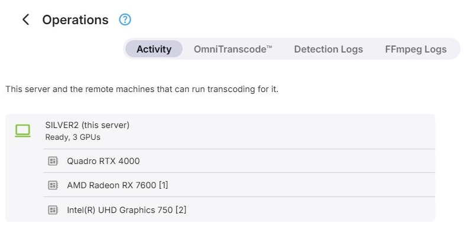

Operations
Transcoding Operations
The Operations page in the Transcoding section of the dashboard shows what this server and its remote hosts are currently doing, and gives access to remote hosts and to the logs. It has these tabs:
- Activity - the transcoding jobs that are running, described below
- OmniTranscode™ - remote transcoding hosts, see OmniTranscode™. The tab is only shown when Emby Server runs on Windows or Linux.
- Detection Logs and FFmpeg Logs - see Logs
Activity
The Activity tab lists this server and every enabled remote host, each with the jobs running on it. The list refreshes on its own while jobs start and finish.

- This server is shown as (this server) after its name, with a status of Detecting hardware, Ready, software only, or Ready with the number of GPUs.
- A remote host is shown with its ID and name, the address Emby reaches it at, and its status. A host that is switched off only appears while a job is still running on it.
Below each host, every GPU that is in use or enabled in the transcoding configuration has a row of its own, followed by a Software row for jobs running on the CPU. GPUs that are switched off in the configuration are hidden unless a job is running on them.
Each job shows its title, the user, the kind of job, and its progress where that is known.
Cancelling Jobs
Jobs can be cancelled individually, all jobs on one GPU, all software jobs on a host, or all jobs on a host. Each of these asks for confirmation first.
Further Reading
Video transcoding in Emby
Transcoding speed, fps and media time
Concurrent encoder sessions, policy and capacity